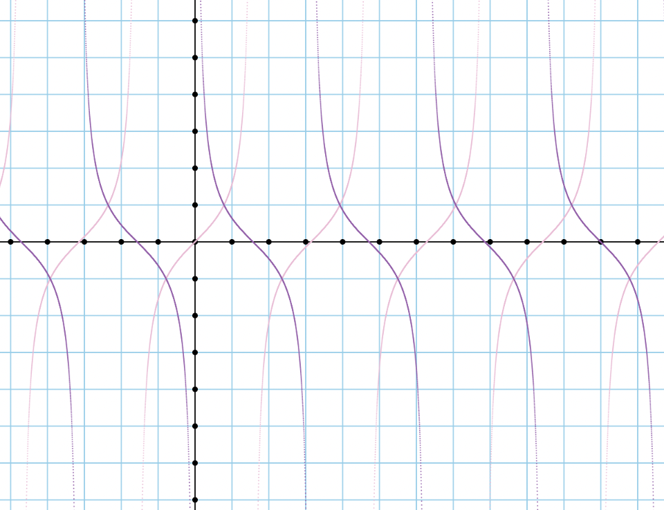
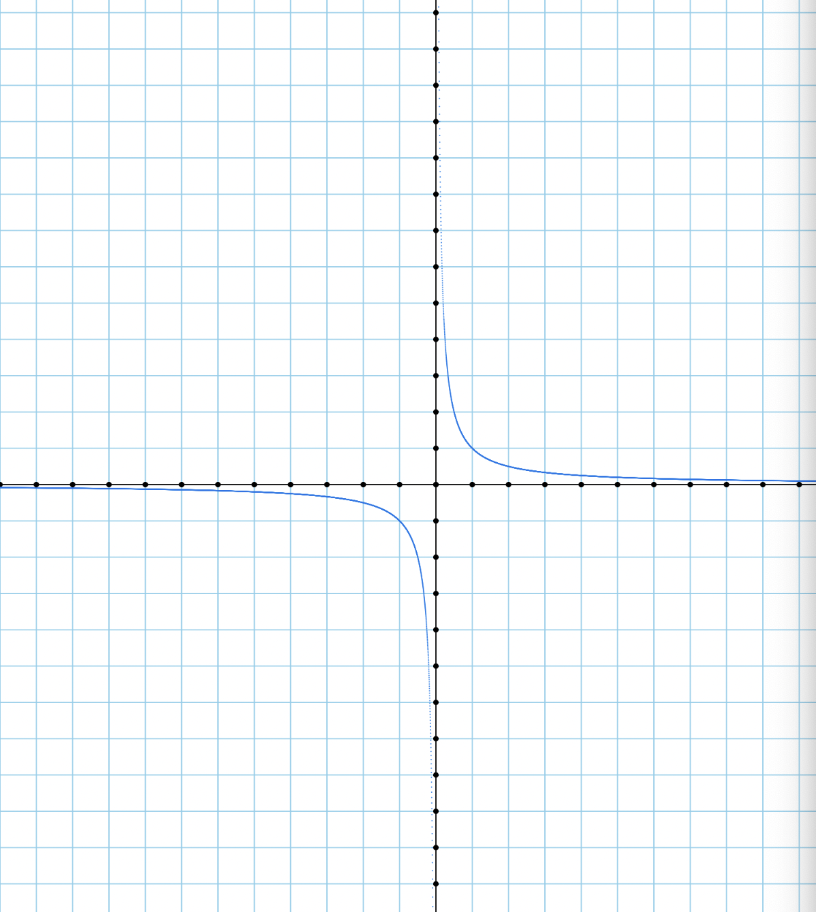
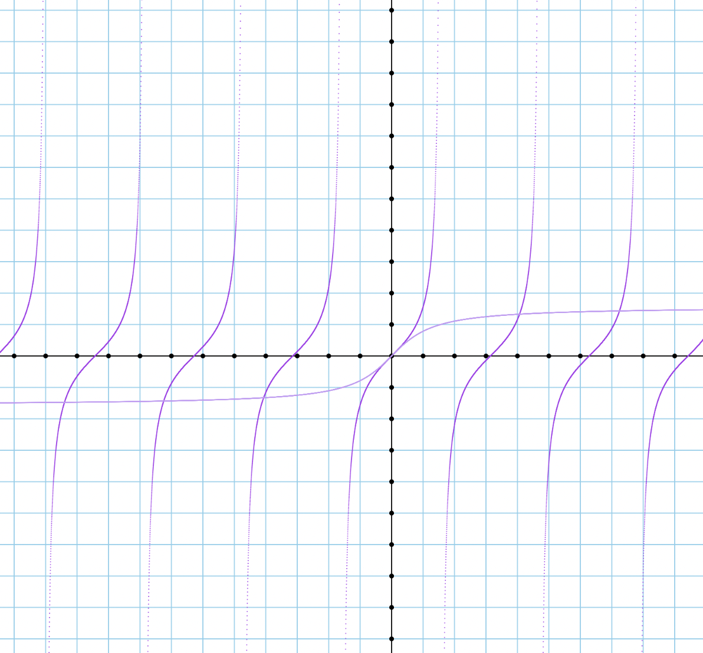
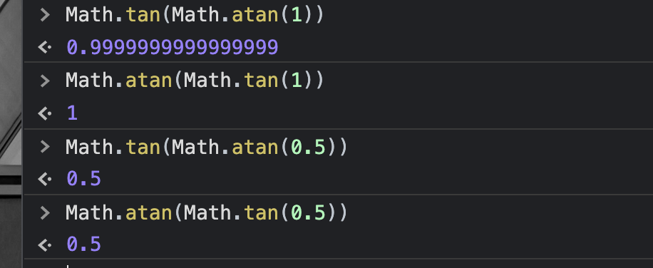
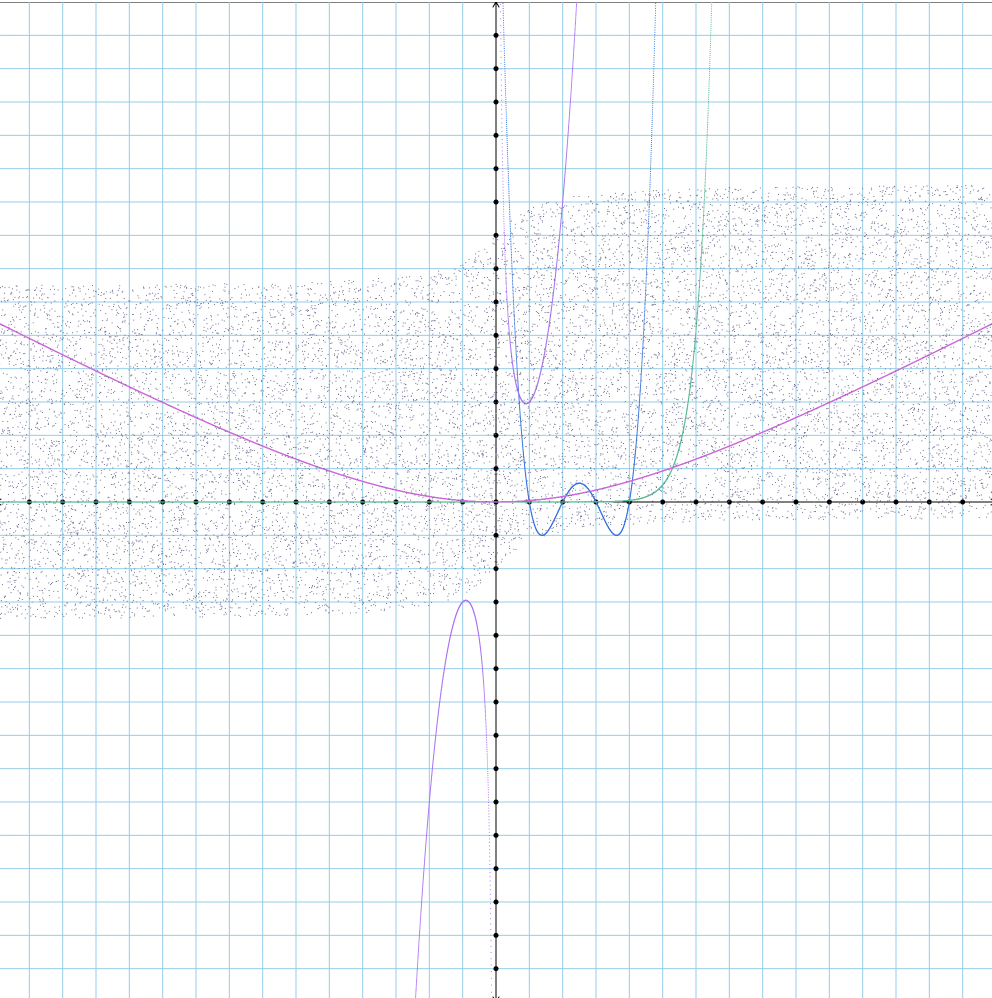

Questions
1.Here is an interesting fact about the “tangent” function: Math.tan(a+b) == (Math.tan(a) + Math.tan(b)) / (1 - Math.tan(a) * Math.tan(b)). Let’s suppose you had two angles, x and y and you knew that Math.tan(x) == 3/4 and Math.tan(y) == 12/5. Use your skills with grade school math to evaluate Math.tan(x+y) — specifically, do not use the console. Show all the little steps of your solution.
Math.tan(x) + Math.tan(y) = Math.tan(x+y)
Math.tan(x) = 3/4
Math.tan(y) = 12/5
Math.tan(x) + Math.tan(y) = Math.tan(x+y) = 12/5 + 3/4 = 63/20
/
(1 - Math.tan(x) * Math.tan(y))
1 -9/5 = (-4/5)
(63/20) / (-4/5) = -63/16
2.On the same graph show f(x) = Math.tan(x) and g(x) = 1 / Math.tan(x). Write a sentence with some observations about this graph.

I notice that the lines are inverted.
3.Do question 2 first. Now: Try to use mental math to graph the function h(x) = 1/x. Write a sentence describing what you think it will look like. Then graph the function. (By now you should know that I expect to see a screenshot of this graph in your answer.) Next, write a sentence to see if the image of the graph compares to what your mental model was before; write down some thoughts / observations. Finally write a sentence that compares the graph for h(x) to the graph you got for #2.

I believe that it should look like 2 parabolic arcs, one in quadrant 3 and one in quadrant 1
So, as I predicted, they are parabolic (hyperbolic) arcs in the 3rd and 1st quadrant. More specificly, they are horizontal and vertical asymptotes. The lines seem to line up at around the f(x) = x, when x is -0.5 and diverge when x = 0.5.
4.Graph the function (x) => Math.tan(x) and the function (x) => Math.atan(x) on the same graph. Write a sentence with some thoughts about what you see.

Math.atan(x) never seems to reach the infinity (or negative infinity) point. It doesn't seem to drop off.
5.Easy console work:
Math.tan(Math.atan(1))
Math.atan(Math.tan(1))
Math.tan(Math.atan(0.5))
Math.atan(Math.tan(0.5))

6.Create 5 crazy cool functions and put them all on the same graph. Be artistic.

7.Prepare 5 basic functions for a round of “guess the function,” and be prepared with ideas on how to help us figure them out in case we get stuck.
done
8.Create a video of you counting from 0 to 31 in base 2 using your hand.
done
9.Write a function toBinary that takes a number and returns a string having that number converted to base 2. For example, toBinary(13) should return the string "0b1101".
function toBinary(number){
const result = number.toString(2);
return '0b' + result;
}
10.Write a function toDecimal that takes a string containing a number expressed as a string in base 2 and returns a number. For example, toDecimal('0b1101') should return 13.
function toDecimal(binary){
var realdigit = binary.split('b');
var g = realdigit[1];
var digit = parseInt(g, 2);
return digit;
}
11.Read this wikipedia article: https://en.wikipedia.org/wiki/Inverse_function (or the Spanish equivalent).
Choose your favorite example from the article and explain it in your own words.
Explain why the article is relevant to the topics we are discussing in this homework assignment.
a. If you square a square root, you. get the number that you square rooted.
b. I could use this while graphing equations.
12.Goldbach’s conjecture states that every even whole number greater than 2 is the sum of two prime numbers.
a.Prove it up to 10. Easy:
4 = 2 + 2
6 = 3 + 3
8 = 3 + 5
10 = 3 + 7
b.Prove it up to 1000 by implementing your algorithm from the previous homework.
function from2to(max){
let array = [];
for (let i = 0; i '<' max - 1; i+=2) {
let number = 2 + i;
array.push(number);
}
return array;
}
function isPrimeNumber(a) {
for(var i = 2;i"<"a;i++){
if(a%i==0) return false;
}
return true;
}
function primerunner(o){
var g = from2to(o);
for (j = 0; j"<"o; j++){
n = g[j];
for(var i =2;i"<"n/2;i++) {
if(isPrimeNumber(i) && isPrimeNumber(n-i)) {
console.table(n + " is " + i + " + " + (n-i));
}
}
}
}